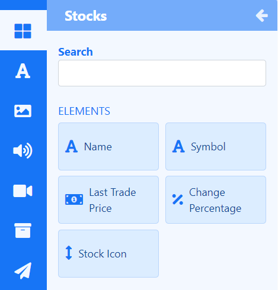
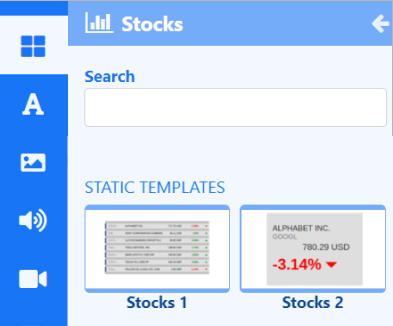

Stocks
Display trade price information for stock listings anywhere on a Layout using Elements or select a Static Template to display results in Layouts/Playlists.
The Stocks Widget relies in part on the Alpha Vantage API to retrieve stock market data which feeds into configured Elements and Static Templates. The prices returned by Alpha Vantage follow the stock market standard of adjusting for corporate events such as splits and dividend payout.
Please visit Alpha Vantage to create an account and obtain an API key to enter into the Alpha Vantage Connector.
Stocks Elements
Elements are available for selection when adding the Stocks Widget to a Layout to give Users more control over what components of the Stocks Widget to use and where they can be placed.

Each Element has a set of configuration options in the Properties Panel. Enter Stock Symbols to return results from the Configure tab.
If you need a stock symbol that is only quoted on a specific exchange then you can use the format
SYMBOL:EXCHANGEto return results. Stock symbols can be found on various lookup sites such as Yahoo Finance!
Control how items should be cycled by specifying a Data Slot to use for each of the added Elements. Data Elements can be further complimented by adding Global Elements to add shapes and text which can all be put into an Element Group for easier configuration and positioning.
Stocks Static Templates
Static Templates define how returned results should be laid out and styled and are a simple way to show your data using pre-styled templates.

Templates can be configured to make changes to the design appearance using a range of options in the Properties Panel. Enter Stock Symbols to return results from the Configure tab for each Template added to the Layout/Playlist.
Overview
- Content for this media is cached by the Players for off-line playback.
- Duration can be applied per item or per page.